Portafolio del curso
Modelo de toma de decisiones
Trabajos, ejercicios y autoevaluaciones de cada semana, desde la teoría de juegos hasta las cadenas de Markov.
Resumen por semana
Índice por semana
- Semana 1Presentación sobre la clasificación de los tipos de juegos
- Semana 4Cuatro ejercicios: maximin, árboles de juego, amenazas creíbles y oligopolio
- Semana 4Valor esperado, sensibilidad y criterios de decisión
- Semana 9Curso R for Data Science y función en R
- Semana 9Cuatro modelos de programación lineal resueltos en R
- Semana 11Seis ejercicios resueltos con Simplex y lpSolve
- Semana 12Presentación sobre transporte y asignación
- Semana 15Ensayo sobre cadenas de Markov y PageRank
Tabla resumen de autoevaluación
Actividades desarrolladas, calificación de 0 a 100 y valoración de lo aprendido en cada semana. Cada fila lleva al trabajo completo.
| Semana | Actividades desarrolladas | Calificación | Valoración de lo aprendido |
|---|---|---|---|
| Semana 1Clasificación de los tipos de juegosVer trabajo → | Realicé una presentación sobre la clasificación de los diferentes tipos de juegos dentro de la teoría de juegos, incluyendo sus características y ejemplos de aplicación. | 100/100 | Con este trabajo aprendí a diferenciar los tipos de juegos, como los cooperativos, no cooperativos, simétricos, asimétricos, de suma cero y no cero. También comprendí que estos conceptos se pueden aplicar a situaciones reales, donde las decisiones de una persona o empresa pueden afectar los resultados de otras. |
| Semana 4Segundo trabajo asincrónicoVer trabajo → | Resolví cuatro ejercicios relacionados con la teoría de juegos, aplicando estrategias maximin, árboles de juego, amenazas creíbles y vacías, y modelos de oligopolio como Cournot, Stackelberg y Cartel. | 100/100 | Estos ejercicios me ayudaron a comprender mejor cómo analizar las decisiones de diferentes jugadores y cómo sus estrategias pueden influir en los resultados. Aprendí a interpretar matrices de ganancias, identificar las mejores decisiones y entender la importancia de anticipar las acciones de los demás. También logré diferenciar los modelos de oligopolio y sus efectos sobre las ganancias de las empresas. |
| Semana 4Matrices de pagos y criterios de selección de alternativaVer trabajo → | Resolví el ejercicio del panadero utilizando el valor esperado y el análisis de sensibilidad. Además, realicé ejercicios aplicando los criterios de dominación, Maximin, Maximax, Hurwicz, Minimax y Laplace para seleccionar alternativas. | 100/100 | Con estas actividades aprendí a comparar diferentes alternativas para tomar decisiones cuando existe incertidumbre. Comprendí cómo utilizar las probabilidades para calcular el valor esperado y cómo los cambios en estas pueden afectar una decisión. También aprendí que no siempre se obtiene la misma alternativa al aplicar diferentes criterios, ya que cada uno considera el riesgo de una manera distinta. |
| Semana 9R for Data ScienceVer trabajo → | Completé el curso R for Data Science, donde estudié los fundamentos del lenguaje R. También realicé un ejercicio de programación creando una función que utiliza una estructura condicional para evaluar la calificación de una película. | 100/100 | Este curso me permitió aprender a utilizar R para trabajar con datos, variables, vectores, matrices y funciones. También conocí diferentes herramientas para organizar y manipular información. Considero que fue un aprendizaje útil porque me ayudó a comprender mejor cómo la programación puede facilitar el análisis de datos y la resolución de problemas. |
| Semana 9Programación linealVer trabajo → | Resolví cuatro ejercicios de programación lineal: Reddy Mikks, Granjas Modelo, asignación de programas a procesadores e inversión en la bolsa. Para cada uno planteé las variables, la función objetivo y las restricciones, utilizando R para encontrar las soluciones óptimas. | 100/100 | Con estos ejercicios aprendí a representar problemas reales mediante modelos matemáticos y a buscar soluciones que permitan aprovechar mejor los recursos. Comprendí cómo plantear correctamente las restricciones y utilizar R para maximizar ganancias o minimizar costos y tiempos. Además, pude ver que la programación lineal se puede aplicar a situaciones muy diferentes, desde la producción hasta las inversiones. |
| Semana 11Método SimplexVer trabajo → | Resolví seis ejercicios relacionados con el método Simplex, planteando funciones objetivo, restricciones y tablas iniciales. También utilicé R y la biblioteca lpSolve para obtener e interpretar los resultados de los diferentes problemas. | 100/100 | Estos ejercicios me ayudaron a comprender mejor cómo funciona el método Simplex y cómo se utiliza para encontrar soluciones óptimas. Aprendí a organizar los problemas en forma tabular y a interpretar los resultados obtenidos en R. También comprendí que algunos problemas pueden tener soluciones no acotadas y que es importante revisar las restricciones antes de tomar una decisión. |
| Semana 12Presentación: problemas de transporteVer trabajo → | Realicé una presentación sobre los problemas de transporte y asignación en programación lineal, explicando sus principales características, diferencias y aplicaciones. | 100/100 | Con esta presentación aprendí a diferenciar los problemas de transporte y asignación. Comprendí que los primeros buscan distribuir productos de la manera más eficiente, mientras que los segundos se enfocan en asignar tareas a diferentes recursos. También entendí cómo estos modelos pueden ayudar a las empresas a optimizar sus recursos y tomar mejores decisiones. |
| Semana 15Ensayo: cadenas de MarkovVer trabajo → | Observé el video de Veritasium sobre las cadenas de Markov y elaboré un ensayo relacionado con su aplicación en el algoritmo PageRank de Google y su importancia en la toma de decisiones. | 100/100 | Esta actividad me permitió comprender cómo las cadenas de Markov utilizan probabilidades para analizar diferentes situaciones. Me pareció muy interesante descubrir cómo se aplican en algo tan cotidiano como las búsquedas de Google. Además, aprendí que los modelos matemáticos no solamente sirven para resolver ejercicios, sino que también tienen aplicaciones importantes en la tecnología y en la toma de decisiones. |
Clasificación de los tipos de juegos
Presentación de Clasificación de los Tipos de Juegos
Abrir la presentación en Canva ↗Actividades desarrolladas
Realicé una presentación sobre la clasificación de los diferentes tipos de juegos dentro de la teoría de juegos, incluyendo sus características y ejemplos de aplicación.
Valoración de lo aprendido
Con este trabajo aprendí a diferenciar los tipos de juegos, como los cooperativos, no cooperativos, simétricos, asimétricos, de suma cero y no cero. También comprendí que estos conceptos se pueden aplicar a situaciones reales, donde las decisiones de una persona o empresa pueden afectar los resultados de otras.
Segundo trabajo asincrónico
Ejercicio 1
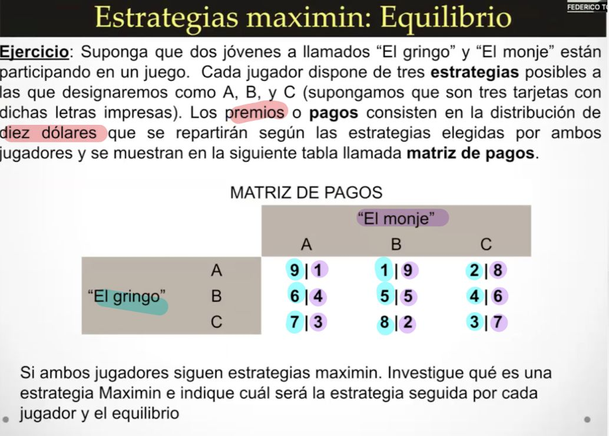
- Estrategia Maximin: La estrategia maximin consiste en seleccionar la alternativa que ofrece el mayor de los resultados mínimos posibles, es decir, cada jugador identifica el peor resultado de cada estrategia y elige aquella que le garantiza la mayor ganancia en ese peor escenario.
- Estrategia Maximin de “El gringo”
| Estrategia del Gringo | Pagos posibles | Mínimo |
|---|---|---|
| A | 9, 1, 2 | 1 |
| B | 6, 5, 4 | 4 |
| C | 7, 8, 3 | 3 |
El máximo entre los mínimos(1, 4, 3) es 4.
Entonces con B, sabe que incluso en el peor escenario recibirá $4.
- Estrategia maximin de “El monje”
| Estrategia del Monje | Pagos posibles | Mínimo |
|---|---|---|
| A | 1, 4, 3 | 1 |
| B | 9, 5, 2 | 2 |
| C | 8, 6, 7 | 6 |
El máximo entre los mínimos(1, 2, 6) es 6.
Entonces con C, sabe que incluso en el peor escenario recibirá $6.
- Equilibrio
Las estrategias elegidas son B por el gringo y C por el monje, entonces buscamos la intersección en la matriz y el equilibrio sería (B, C), con un pago de $4 para El gringo y $6 para El monje.
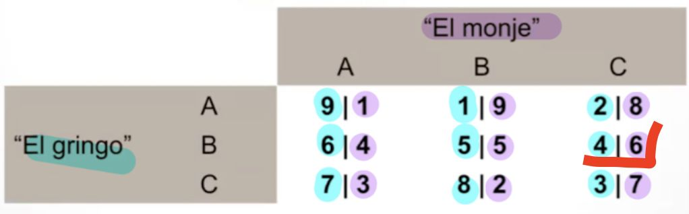
Ejercicio 2
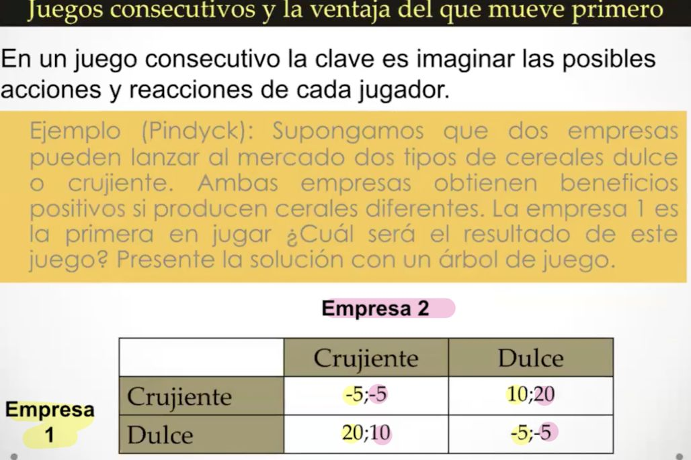
Representación árbol de juego
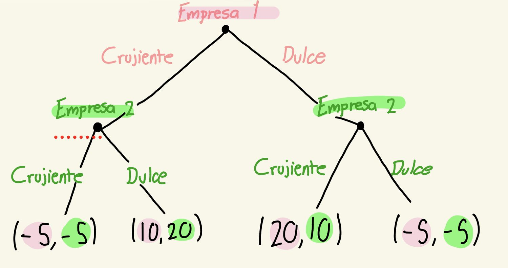
Análisis
Como la Empresa 1 juega primero, debe anticipar cuál será la respuesta de la Empresa 2 ante cada una de sus decisiones.
Si la Empresa 1 elige Crujiente, la Empresa 2 preferirá producir Dulce, porque obtendría 20 en lugar de -5. En este caso, el resultado sería (10,20).
Si la Empresa 1 elige Dulce, la Empresa 2 preferirá producir Crujiente, porque obtendría 10 en lugar de -5. En este caso, el resultado sería (20,10).
Por lo tanto, anticipando las decisiones de la Empresa 2, la Empresa 1 elegirá Dulce, ya que así obtiene un beneficio de 20, mientras que si eligiera Crujiente obtendría solamente 10.
Entonces la Empresa 1 producirá cereal Dulce y la Empresa 2 producirá cereal Crujiente, obteniendo beneficios de 20 y 10, respectivamente. El resultado final es (20,10). Esto muestra la ventaja de mover primero, ya que la Empresa 1 puede anticipar la reacción de la Empresa 2 y escoger la estrategia que le proporciona el mayor beneficio.
Ejercicio 3
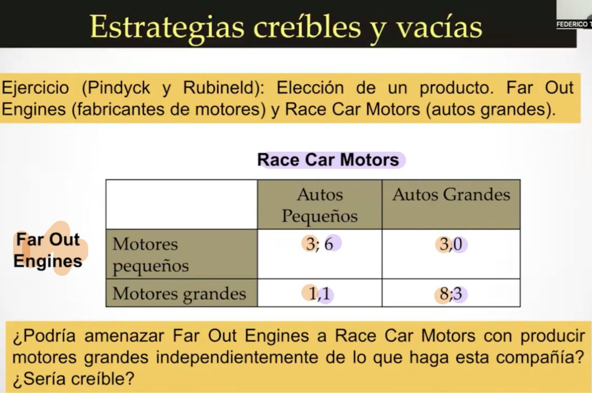
Far Out Engines puede amenazar a Race Car Motors con producir motores grandes independientemente de la decisión que tome esta última; sin embargo, la amenaza no sería creíble. Si Race Car Motors produce autos pequeños, Far Out obtendría una ganancia de 3 produciendo motores pequeños y solamente 1 produciendo motores grandes, por lo que preferiría producir motores pequeños. En cambio, si Race Car Motors produce autos grandes, Far Out sí preferiría producir motores grandes, ya que obtendría 8 en lugar de 3. Por tanto, la amenaza de producir motores grandes independientemente de lo que haga Race Car Motors es una amenaza vacía o no creíble.
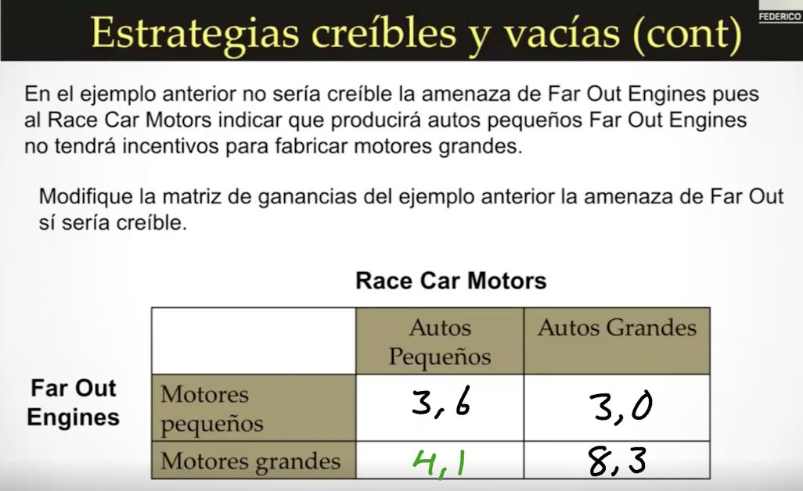
Se modificó la ganancia de Far Out Engines en la combinación Motores grandes-Autos pequeños, pasando de 1 a 4. De esta manera, si Race Car Motors produce autos pequeños, Far Out prefiere motores grandes porque obtiene 4 en lugar de 3; y si Race Car Motors produce autos grandes, también prefiere motores grandes porque obtiene 8 en lugar de 3. Por lo tanto, la amenaza de producir motores grandes independientemente de la decisión de Race Car Motors sí sería creíble.
Ejercicio 4
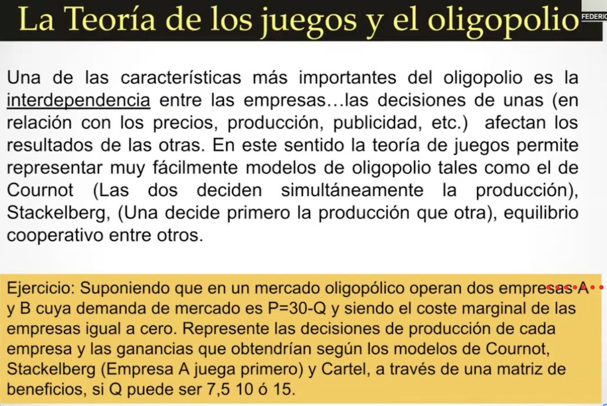
La demanda del mercado es: P=30-Q
Como hay dos empresas, la cantidad total producida es lo que produce la empresa A más lo que produce la empresa B: Q = QA + QB
Además, como el costo marginal es 0, para obtener la ganancia de cada empresa se multiplica el precio por la cantidad que produce cada una.
Con las opciones de producción de 7,5, 10 y 15, se obtiene la siguiente matriz de ganancias:
| Empresa A / Empresa B | 7,5 | 10 | 15 |
|---|---|---|---|
| 7,5 | (112,5 ; 112,5) | (93,75 ; 125) | (56,25 ; 112,5) |
| 10 | (125 ; 93,75) | (100 ; 100) | (50 ; 75) |
| 15 | (112,5 ; 56,25) | (75 ; 50) | (0;0) |
Cournot: Como las dos empresas deciden al mismo tiempo, el resultado es que ambas producen 10 unidades. Así, cada una obtiene una ganancia de 100.
Stackelberg: En este caso, la empresa A decide primero. A le conviene producir 15 unidades, porque sabe que la mejor respuesta de B será producir 7,5. Con esta decisión, A obtiene una ganancia de 112,5 y B una ganancia de 56,25.
Cartel: En este caso las empresas cooperan y buscan obtener la mayor ganancia entre las dos. La mejor opción es que cada una produzca 7,5 unidades, ya que así cada empresa gana 112,5, para una ganancia total de 225.
Resultados finales:
- Cournot: A = 10, B = 10 → ganancias (100 ; 100).
- Stackelberg: A = 15, B = 7,5 → ganancias (112,5 ; 56,25).
- Cartel: A = 7,5, B = 7,5 → ganancias (112,5 ; 112,5).
Actividades desarrolladas
Resolví cuatro ejercicios relacionados con la teoría de juegos, aplicando estrategias maximin, árboles de juego, amenazas creíbles y vacías, y modelos de oligopolio como Cournot, Stackelberg y Cartel.
Valoración de lo aprendido
Estos ejercicios me ayudaron a comprender mejor cómo analizar las decisiones de diferentes jugadores y cómo sus estrategias pueden influir en los resultados. Aprendí a interpretar matrices de ganancias, identificar las mejores decisiones y entender la importancia de anticipar las acciones de los demás. También logré diferenciar los modelos de oligopolio y sus efectos sobre las ganancias de las empresas.
Matrices de pagos y criterios de selección de alternativa
Ejercicio del panadero
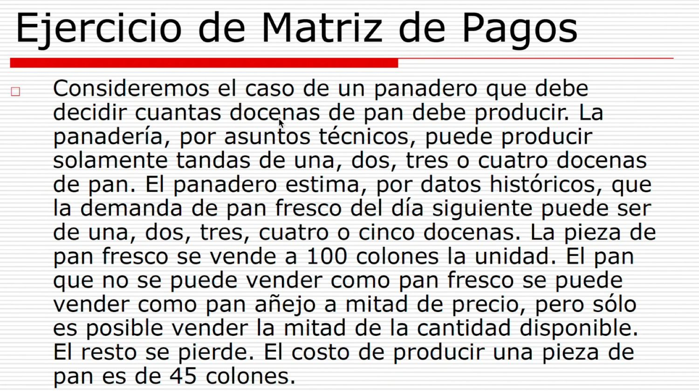
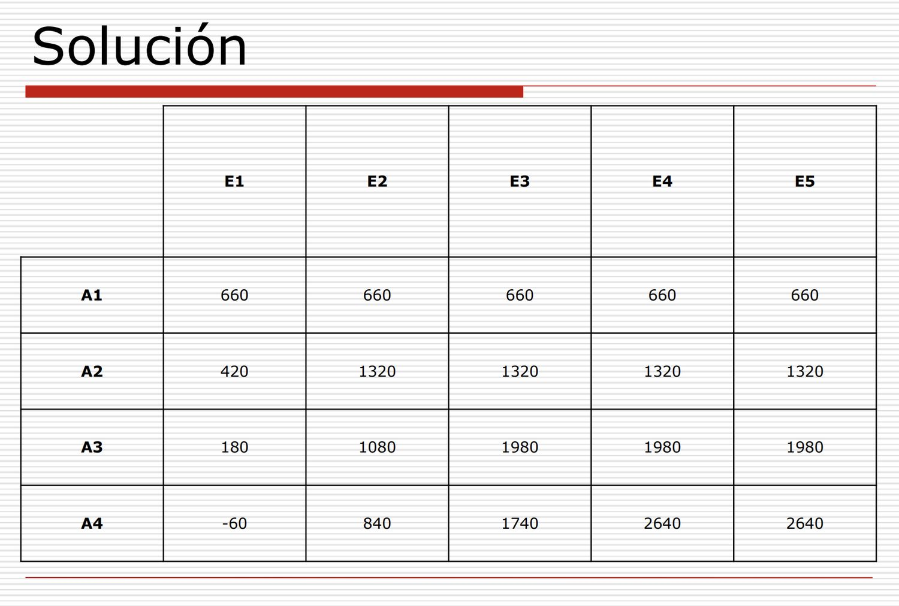
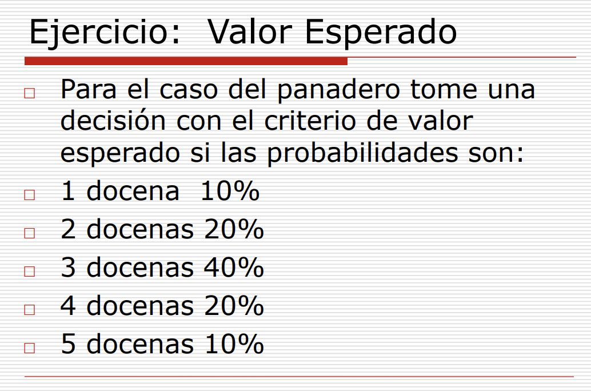
Valor esperado
Se debe hacer pago × probabilidad, y sumamos.
A1
A2
A3
A4
| Alternativa | Valor esperado |
|---|---|
| A1 | ₡660 |
| A2 | ₡1230 |
| A3 | ₡1620 |
| A4 | ₡1650 ← mayor |
Decisión
Como el criterio de valor esperado selecciona la alternativa con el mejor promedio ponderado, el panadero debería producir 4 docenas de pan (A4), porque tiene el mayor valor esperado: ₡1.650.
Análisis de sensibilidad
Para realizar el análisis de sensibilidad se mantienen constantes las probabilidades que se consideran correctas:
Estas probabilidades suman un 40%, por lo tanto, el 60% restante debe distribuirse entre las probabilidades de 3 y 4 docenas, que son las que presentan incertidumbre.
Se define:
Por lo tanto:
Los valores esperados de las alternativas A1, A2 y A3 se mantienen en:
Para la alternativa A4:
Simplificando:
Para determinar el punto en que cambia la decisión, se iguala el valor esperado de A4 con el de A3:
Por lo tanto:
y:
Conclusión
El punto crítico se encuentra cuando la probabilidad de una demanda de 3 docenas es 43,33% y la de 4 docenas es 16,67%. En este punto, las alternativas A3 y A4 tienen el mismo valor esperado de ₡1.620.
Si la probabilidad de una demanda de 3 docenas es menor a 43,33%, se mantiene la decisión de producir 4 docenas (A4). Si es mayor a 43,33%, la mejor decisión cambia a producir 3 docenas (A3). Esto muestra que la decisión inicial es sensible a cambios relativamente pequeños en las probabilidades de demanda de 3 y 4 docenas.
Práctica conjunto de criterios de selección de alternativa
Tabla en la que se trabajará:
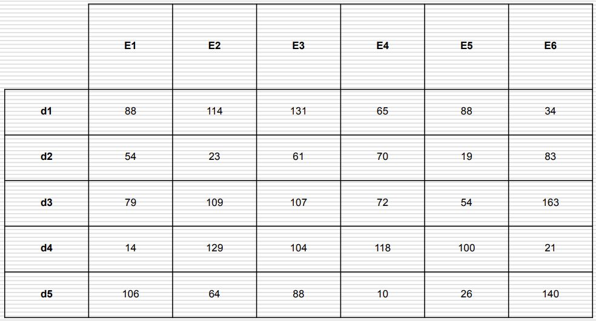
1. Principio de dominación
El criterio de dominación establece que una alternativa se elimina cuando es peor o igual que otra alternativa en todos los estados de la naturaleza.
Al comparar las alternativas, observamos que d3 domina a d2:
| Estado | d2 | d3 |
|---|---|---|
| E1 | 54 | 79 |
| E2 | 23 | 109 |
| E3 | 61 | 107 |
| E4 | 70 | 72 |
| E5 | 19 | 54 |
| E6 | 83 | 163 |
En todos los estados, d3 presenta un resultado mayor que d2.
Resultado: se elimina d2, ya que está dominada por d3.
2. Criterio Maximin o pesimista
Este criterio toma el peor resultado de cada alternativa y luego selecciona el mayor de esos resultados. Buscamos el mínimo de cada fila:
| Alternativa | Mínimo |
|---|---|
| d1 | 34 |
| d2 | 19 |
| d3 | 54 |
| d4 | 14 |
| d5 | 10 |
Resultado: según Maximin, se selecciona d3, con un resultado de 54.
3. Criterio Maximax u optimista
En Maximax buscamos el mejor resultado de cada alternativa y luego seleccionamos el mayor de todos.
| Alternativa | Máximo |
|---|---|
| d1 | 131 |
| d2 | 83 |
| d3 | 163 |
| d4 | 129 |
| d5 | 140 |
Resultado: según Maximax, se selecciona d3, con un resultado de 163.
4. Criterio de Hurwicz o del compromiso
Para Hurwicz se utiliza un coeficiente de optimismo. Siguiendo el ejemplo, utilizamos:
La fórmula es:
Es decir:
Este es el procedimiento indicado para Hurwicz.
d1:
d2:
d3:
d4:
d5:
Entonces:
| Alternativa | Hurwicz |
|---|---|
| d1 | 63,1 |
| d2 | 38,2 |
| d3 | 86,7 |
| d4 | 48,5 |
| d5 | 49 |
Resultado: según Hurwicz, se selecciona d3, ya que obtiene el mayor valor: 86,7.
5. Criterio Minimax o de Savage
Aquí debemos construir primero la matriz de pesar o pérdida de oportunidad. Se busca el valor máximo de cada columna y se le resta cada valor original.
Paso 1. Máximo de cada columna
| E1 | E2 | E3 | E4 | E5 | E6 | |
|---|---|---|---|---|---|---|
| Máximo | 106 | 129 | 131 | 118 | 100 | 163 |
Paso 2. Matriz de pesar
Por ejemplo, para d1:
Y hacemos lo mismo con toda la matriz:
| Alternativa | E1 | E2 | E3 | E4 | E5 | E6 | Máximo pesar |
|---|---|---|---|---|---|---|---|
| d1 | 18 | 15 | 0 | 53 | 12 | 129 | 129 |
| d2 | 52 | 106 | 70 | 48 | 81 | 80 | 106 |
| d3 | 27 | 20 | 24 | 46 | 46 | 0 | 46 |
| d4 | 92 | 0 | 27 | 0 | 0 | 142 | 142 |
| d5 | 0 | 65 | 43 | 108 | 74 | 23 | 108 |
Ahora tomamos el mayor pesar de cada fila y seleccionamos el menor:
Resultado: según Minimax, se selecciona d3, ya que tiene la menor pérdida de oportunidad máxima: 46. Este es justamente el procedimiento de seleccionar los máximos de cada fila de la matriz de pesar y luego escoger el menor.
6. Criterio de Laplace
Laplace supone que todos los estados de la naturaleza son igualmente probables, por lo que se calcula el promedio simple de cada alternativa y se selecciona el mayor.
d1:
d2:
d3:
d4:
d5:
| Alternativa | Promedio |
|---|---|
| d1 | 86.67 |
| d2 | 51.67 |
| d3 | 97.33 |
| d4 | 81 |
| d5 | 72.33 |
Resultado: según Laplace, se selecciona d3, ya que presenta el mayor promedio: 97,33.
Conclusión general
En este caso, los diferentes criterios llevan a una conclusión bastante clara:
| Criterio | Decisión |
|---|---|
| Dominación | Se elimina d2 |
| Maximin | d3 |
| Maximax | d3 |
| Hurwicz O=0,3 | d3 |
| Minimax | d3 |
| Laplace | d3 |
Por lo tanto, d3 es la alternativa más conveniente, ya que resulta seleccionada por todos los criterios que determinan una alternativa final. El principio de dominación, por su parte, permite descartar d2.
Ejercicio tomador de decisiones
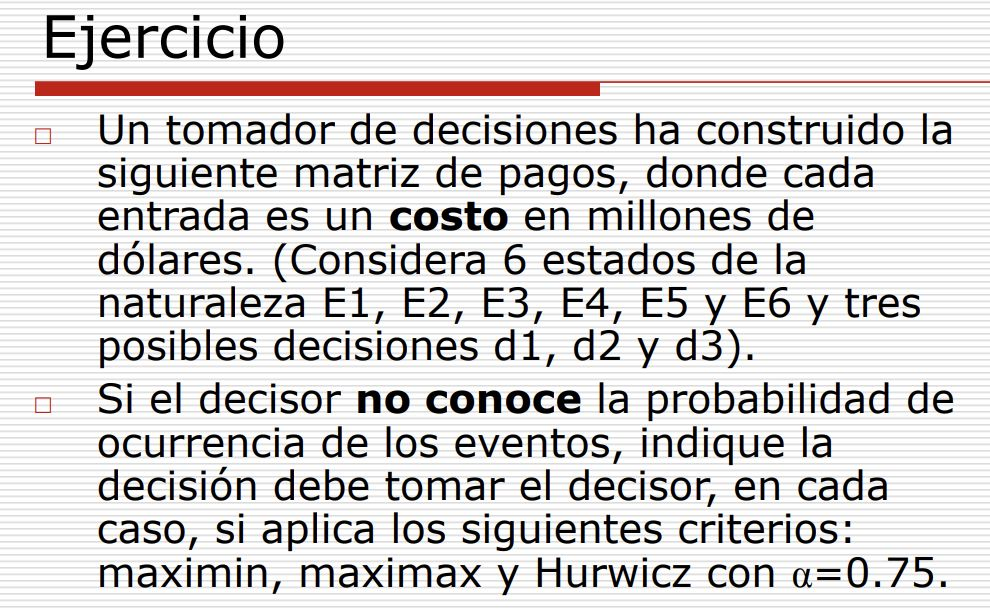
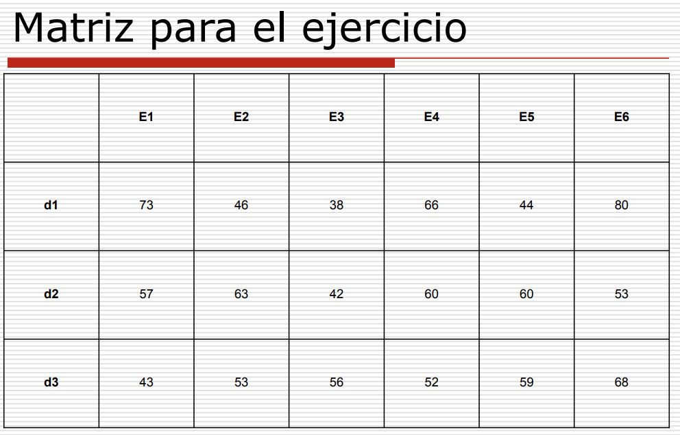
1. Criterio Maximin
En Maximin se toma primero el menor valor de cada alternativa y después se selecciona el mayor de esos valores.
| Alternativa | Menor valor |
|---|---|
| d1 | 38 |
| d2 | 42 |
| d3 | 43 |
Decisión según Maximin: d3, porque tiene el mayor de los valores mínimos, 43.
2. Criterio Maximax
En Maximax se identifica primero el mayor valor de cada alternativa y posteriormente se selecciona el mayor de todos.
| Alternativa | Mayor valor |
|---|---|
| d1 | 80 |
| d2 | 63 |
| d3 | 68 |
Decisión según Maximax: d1, porque presenta el mayor resultado posible, 80.
3. Criterio de Hurwicz
El coeficiente de optimismo indicado es:
Aplicamos la fórmula:
Es decir:
d1
d2
d3
Comparamos:
| Alternativa | Hurwicz |
|---|---|
| d1 | 69.5 |
| d2 | 57,75 |
| d3 | 61,75 |
Decisión según Hurwicz: d1, ya que presenta el mayor resultado, 69,50.
Conclusión general: Aplicando el criterio Maximin, se selecciona la alternativa d3, ya que presenta el mayor de los resultados mínimos, con un valor de 43. Según el criterio Maximax, se selecciona d1, debido a que posee el mayor resultado posible, con un valor de 80. Finalmente, al aplicar el criterio de Hurwicz con un coeficiente de optimismo de 0,75, se obtienen valores de 69,50 para d1, 57,75 para d2 y 61,75 para d3, por lo que se selecciona la alternativa d1.
Actividades desarrolladas
Resolví el ejercicio del panadero utilizando el valor esperado y el análisis de sensibilidad. Además, realicé ejercicios aplicando los criterios de dominación, Maximin, Maximax, Hurwicz, Minimax y Laplace para seleccionar alternativas.
Valoración de lo aprendido
Con estas actividades aprendí a comparar diferentes alternativas para tomar decisiones cuando existe incertidumbre. Comprendí cómo utilizar las probabilidades para calcular el valor esperado y cómo los cambios en estas pueden afectar una decisión. También aprendí que no siempre se obtiene la misma alternativa al aplicar diferentes criterios, ya que cada uno considera el riesgo de una manera distinta.
R for Data Science
Ejercicio sobre funciones en R
Enunciado
Crear una función llamada isGoodRating que reciba como argumento la calificación de una película. La función debe evaluar la calificación utilizando una estructura if/else. Si la calificación es menor que 7, debe retornar "NO"; de lo contrario, debe retornar "YES". Finalmente, probar la función utilizando las calificaciones 6 y 9.5.
Código:
isGoodRating <- function(rating) {
if(rating < 7) {
return("NO")
} else {
return("YES")
}
}
isGoodRating(6)
isGoodRating(9.5)Resultado:
'NO'
'YES'Curso completado
Actividades desarrolladas
Completé el curso R for Data Science, donde estudié los fundamentos del lenguaje R. También realicé un ejercicio de programación creando una función que utiliza una estructura condicional para evaluar la calificación de una película.
Valoración de lo aprendido
Este curso me permitió aprender a utilizar R para trabajar con datos, variables, vectores, matrices y funciones. También conocí diferentes herramientas para organizar y manipular información. Considero que fue un aprendizaje útil porque me ayudó a comprender mejor cómo la programación puede facilitar el análisis de datos y la resolución de problemas.
Programación lineal
Ejercicio 1. Reddy Mikks
1.1 Planteamiento del problema
La empresa Reddy Mikks produce dos tipos de pintura: pintura para exteriores (M1) y pintura para interiores (M2). Para su producción utiliza dos materias primas, A y B, cuyas disponibilidades diarias son limitadas.
El objetivo es determinar cuántas toneladas de cada tipo de pintura deben producirse diariamente para maximizar la utilidad total, considerando la disponibilidad de materias primas y las restricciones de demanda.
Datos del problema
| Recurso | Pintura exterior (M1) | Pintura interior (M2) | Disponibilidad diaria |
|---|---|---|---|
| Materia prima A | 6 | 4 | 24 |
| Materia prima B | 1 | 2 | 6 |
| Utilidad por tonelada | 5 | 4 | - |
Además, se establecen las siguientes condiciones:
- La demanda diaria de pintura para interiores no puede superar en más de una tonelada la demanda de pintura para exteriores.
- La demanda máxima diaria de pintura para interiores es de dos toneladas.
1.2 Variables de decisión
Se definen las siguientes variables:
Estas variables representan las cantidades de pintura que la empresa debe producir diariamente.
Función objetivo
La empresa busca maximizar la utilidad total obtenida por la producción de ambos tipos de pintura.
La utilidad por tonelada de pintura para exteriores es de 5 unidades monetarias, mientras que la utilidad por tonelada de pintura para interiores es de 4 unidades monetarias.
Por lo tanto, la función objetivo es:
Donde Z representa la utilidad total diaria.
1.3 Restricciones del modelo
Restricción 1. Materia prima A
La disponibilidad diaria de materia prima A es de 24 toneladas.
Restricción 2. Materia prima B
La disponibilidad diaria de materia prima B es de 6 toneladas.
Restricción 3. Demanda de pintura para interiores
La producción de pintura para interiores no puede superar en más de una tonelada la producción de pintura para exteriores.
Restricción 4. Demanda máxima de pintura para interiores
Restricción 5. No negatividad
Las cantidades producidas no pueden ser negativas.
1.4 Modelo matemático completo
El modelo de programación lineal queda definido de la siguiente manera:
Maximizar:
Sujeto a:
1.5 Representación gráfica de la solución usando R
Mediante el programa R se realizó la representación gráfica de las restricciones del modelo de programación lineal. La región sombreada en verde representa las combinaciones de producción que cumplen simultáneamente todas las restricciones establecidas.
El gráfico permite identificar los puntos esquina de la región factible y determinar que la solución óptima se encuentra en las coordenadas (3; 1,5), donde se obtiene la mayor utilidad.
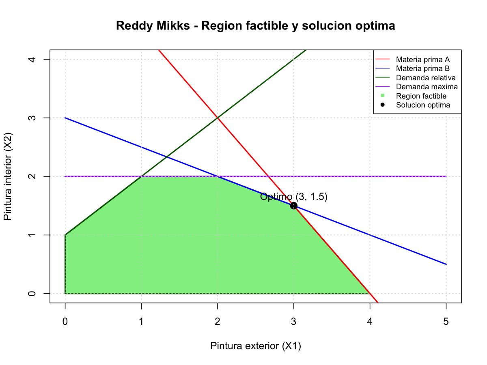
1.6 Interpretación de resultados
De acuerdo con los resultados obtenidos, la empresa Reddy Mikks debe producir diariamente 3 toneladas de pintura para exteriores y 1,5 toneladas de pintura para interiores.
Esta combinación permite alcanzar una utilidad máxima de 21 unidades monetarias diarias, cumpliendo las restricciones de disponibilidad de materias primas y las condiciones de demanda.
Por lo tanto, esta combinación representa la solución óptima del problema.
Ejercicio 2. Granjas modelo
2.1. Planteamiento del problema
En Granjas Modelo se utiliza diariamente un mínimo de 800 libras de un alimento especial, elaborado mediante una mezcla de maíz y soya.
Cada ingrediente contiene diferentes cantidades de proteínas y fibras, además de presentar distintos costos por libra.
El alimento debe contener al menos un 30% de proteínas y un máximo de 5% de fibras.
El objetivo es determinar cuántas libras de maíz y soya deben utilizarse diariamente para cumplir con los requerimientos nutricionales al menor costo posible.
Datos del problema
| Ingrediente | Proteínas (lb/lb) | Fibras (lb/lb) | Costo ($/lb) |
|---|---|---|---|
| Maíz | 0.09 | 0.02 | 0.30 |
| Soya | 0.60 | 0.06 | 0.90 |
Condiciones:
- Se deben producir al menos 800 libras diarias.
- El alimento debe contener como mínimo un 30% de proteínas.
- El contenido de fibras no puede superar el 5%.
- Se busca minimizar el costo total diario.
2.2. Variables de decisión
Se definen las siguientes variables:
Estas variables representan las cantidades de cada ingrediente que deben utilizarse para elaborar el alimento especial.
2.3. Función objetivo
El objetivo de Granjas Modelo es minimizar el costo diario de producción del alimento.
El costo por libra de maíz es de $0,30 y el costo por libra de soya es de $0,90.
Por lo tanto, la función objetivo es:
Donde Z representa el costo total diario de la mezcla.
2.4. Restricciones del modelo
Restricción 1. Cantidad mínima de alimento
La empresa necesita producir al menos 800 libras de alimento diariamente.
Restricción 2. Contenido mínimo de proteínas
El alimento debe contener al menos un 30% de proteínas.
Como el maíz contiene un 9% de proteínas y la soya un 60%, se establece:
Desarrollando:
Agrupando términos:
Por lo tanto:
Restricción 3. Contenido máximo de fibras
El alimento puede contener como máximo un 5% de fibras.
El maíz contiene un 2% de fibras y la soya un 6%.
Por lo tanto:
Desarrollando:
Agrupando términos:
Por lo tanto:
Restricción 4. No negatividad
Las cantidades de maíz y soya no pueden ser negativas.
2.5. Modelo matemático
Minimizar:
Sujeto a:
Este modelo permite determinar las cantidades óptimas de maíz y soya que minimizan el costo de producción, cumpliendo los requerimientos nutricionales establecidos.
2.6. Representación gráfica de la solución usando R
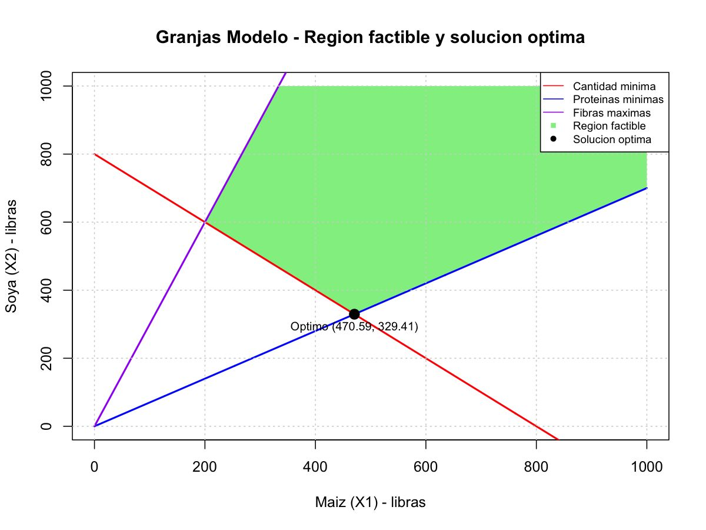
2.7 Interpretación de resultados
Mediante la aplicación del modelo de programación lineal en R, se determinó que Granjas Modelo debe utilizar diariamente 470,59 libras de maíz y 329,41 libras de soya para elaborar el alimento especial.
Esta combinación permite producir las 800 libras requeridas, cumpliendo con el contenido mínimo de 30% de proteínas y manteniendo el contenido de fibras por debajo del máximo permitido de 5%.
El costo mínimo diario obtenido es de $437,65, por lo que esta combinación representa la solución óptima del problema.
Ejercicio 3. Programas
3.1. Planteamiento del problema
Se tienen cuatro programas que deben ser asignados a cuatro procesadores para su ejecución. Cada programa requiere un tiempo diferente dependiendo del procesador al que sea asignado.
El objetivo es determinar cómo distribuir los cuatro programas entre los cuatro procesadores, de manera que el tiempo total de ejecución sea el menor posible.
Para ello, se utilizará un modelo de programación lineal que permita identificar la combinación de asignaciones más conveniente.
Datos del problema
| Programa | Procesador 1 | Procesador 2 | Procesador 3 | Procesador 4 |
|---|---|---|---|---|
| Programa 1 | 65 | 73 | 63 | 57 |
| Programa 2 | 67 | 70 | 65 | 58 |
| Programa 3 | 68 | 72 | 69 | 55 |
| Programa 4 | 66 | 75 | 70 | 59 |
Condiciones:
- Cada programa debe asignarse a un procesador.
- Cada procesador debe ejecutar un único programa.
- Los programas deben asignarse completamente, sin dividirse entre procesadores.
- Se busca minimizar el tiempo total de ejecución.
3.2. Variables de decisión
Se definen las siguientes variables:
Donde:
- i representa el programa (1, 2, 3 o 4).
- j representa el procesador (1, 2, 3 o 4).
Cada variable puede tomar los siguientes valores:
0 si el programa no se asigna al procesador
Por ejemplo:
X11=1: El programa 1 se asigna al procesador 1.
X12=1: El programa 1 se asigna al procesador 2.
X23=1: El programa 2 se asigna al procesador 3.
Como existen cuatro programas y cuatro procesadores, se tienen 16 variables de decisión.
Aunque las asignaciones son de naturaleza binaria, el ejercicio solicita resolver inicialmente el modelo considerando las variables como continuas y verificar si los resultados obtenidos son enteros.
3.3. Función objetivo
El objetivo es minimizar el tiempo total necesario para ejecutar los cuatro programas.
Cada asignación tiene un tiempo de ejecución específico, según los datos proporcionados.
Por lo tanto, la función objetivo es:
67X21 + 70X22 + 65X23 + 58X24
68X31 + 72X32 + 69X33 + 55X34
66X41 + 75X42 + 70X43 + 59X44
Esta función representa la suma de los tiempos de ejecución correspondientes a las asignaciones seleccionadas.
El modelo buscará la combinación que permita obtener el menor tiempo total posible.
3.4. Restricciones del modelo
Restricción 1. Asignación de los programas
Cada programa debe asignarse exactamente a un procesador.
Por lo tanto:
Programa 1:
Programa 2:
Programa 3:
Programa 4:
Estas restricciones garantizan que todos los programas sean asignados.
Restricción 2. Capacidad de los procesadores
Cada procesador debe ejecutar exactamente un programa.
Procesador 1:
Procesador 2:
Procesador 3:
Procesador 4:
Estas restricciones permiten que cada procesador reciba únicamente un programa.
Restricción 3. No negatividad y límites de asignación
Las variables deben cumplir:
Esto significa que ninguna asignación puede tener un valor negativo ni superior a uno.
Para seguir las instrucciones del ejercicio, inicialmente se utilizarán variables continuas. Posteriormente se verificará si la solución obtenida presenta valores enteros.
3.5. Modelo matemático completo
El modelo de programación lineal queda definido de la siguiente manera:
Minimizar:
67X21 + 70X22 + 65X23 + 58X24
68X31 + 72X32 + 69X33 + 55X34
66X41 + 75X42 + 70X43 + 59X44
Sujeto a:
Asignación de programas:
Capacidad de los procesadores:
No negatividad y límites:
0 ≤ Xij ≤ 1
Este modelo permite encontrar la asignación de los cuatro programas a los cuatro procesadores que minimiza el tiempo total de ejecución, garantizando que cada programa sea asignado a un único procesador.
3.6. Solución mediante R
Para resolver el problema se utilizó el programa R, aplicando un modelo de programación lineal con variables continuas.
El programa permitió determinar la combinación de asignaciones que minimiza el tiempo total de ejecución, respetando las restricciones establecidas.
Los resultados obtenidos fueron los siguientes:
| Programa | Procesador asignado | Tiempo de ejecución |
|---|---|---|
| Programa 1 | Procesador 3 | 63 |
| Programa 2 | Procesador 2 | 70 |
| Programa 3 | Procesador 4 | 55 |
| Programa 4 | Procesador 1 | 66 |
| Total | 254 |
El tiempo mínimo de ejecución es: 254
Verificación de las variables enteras
Aunque el modelo se resolvió utilizando variables continuas, los resultados obtenidos fueron valores enteros de 0 y 1.
Esto significa que cada programa fue asignado completamente a un procesador, sin necesidad de dividir su ejecución entre varios procesadores.
Por lo tanto, la solución cumple con las condiciones establecidas en el ejercicio.
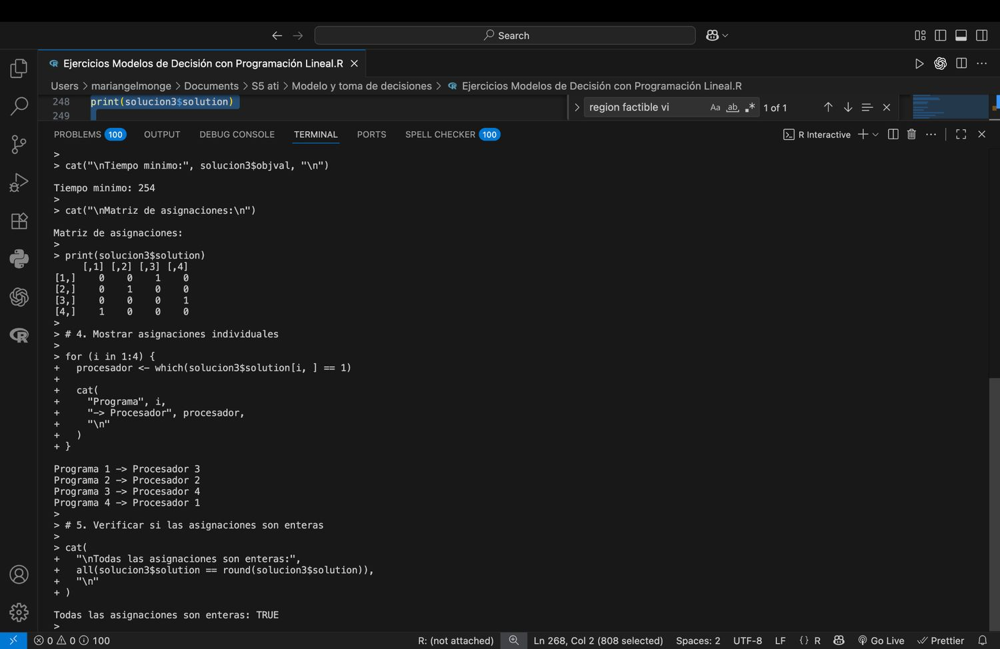
3.7. Interpretación de resultados
Mediante la aplicación del modelo de programación lineal en R, se determinó que la mejor distribución consiste en asignar el programa 1 al procesador 3, el programa 2 al procesador 2, el programa 3 al procesador 4 y el programa 4 al procesador 1.
Con esta combinación se obtiene un tiempo mínimo total de ejecución de 254 unidades de tiempo, cumpliendo con la condición de que cada procesador ejecute únicamente un programa.
Además, se comprobó que, aunque el modelo se resolvió utilizando variables continuas, todas las asignaciones obtenidas fueron enteras.
Por lo tanto, esta distribución representa la solución óptima del problema.
Ejercicio 4. Inversión en la bolsa
4.1. Planteamiento del problema
Un grupo de estudiantes de computación ha reunido un total de $250.000 para invertir en acciones de diferentes empresas.
Existen siete empresas disponibles para realizar la inversión. Cada una presenta un costo diferente por sus acciones y una rentabilidad mensual determinada.
El objetivo es identificar cómo distribuir el dinero disponible entre las empresas, de manera que se obtenga la mayor rentabilidad mensual posible, sin superar el presupuesto establecido.
Datos del problema
| Empresa | Costo ($) | Rentabilidad mensual ($) |
|---|---|---|
| A | 145.000 | 20.000 |
| B | 92.000 | 17.000 |
| C | 70.000 | 15.000 |
| D | 70.000 | 15.000 |
| E | 84.000 | 10.000 |
| F | 15.000 | 8.000 |
| G | 47.000 | 5.000 |
Condiciones
- El presupuesto máximo disponible es de $250.000.
- Cada empresa presenta un costo y una rentabilidad mensual diferentes, aunque C y D tienen los mismos valores.
- Se busca maximizar la rentabilidad mensual total.
- El modelo se resolverá mediante programación lineal.
4.2. Variables de decisión
Se definen las siguientes variables:
X1: Cantidad de inversión en acciones de la empresa A.
X2: Cantidad de inversión en acciones de la empresa B.
X3: Cantidad de inversión en acciones de la empresa C.
X4: Cantidad de inversión en acciones de la empresa D.
X5: Cantidad de inversión en acciones de la empresa E.
X6: Cantidad de inversión en acciones de la empresa F.
X7: Cantidad de inversión en acciones de la empresa G.
Para formular el modelo, cada variable representa la cantidad de paquetes de acciones adquiridos de la empresa correspondiente, donde un paquete tiene el costo y la rentabilidad indicados en la tabla.
Se consideran variables continuas y no negativas, de acuerdo con el enfoque de programación lineal.
4.3. Función objetivo
El objetivo es maximizar la rentabilidad mensual obtenida mediante la inversión en acciones de las siete empresas disponibles.
Cada empresa ofrece una rentabilidad mensual diferente, por lo que se busca determinar la cantidad de paquetes de acciones que deben adquirirse para obtener el mayor beneficio posible.
Por lo tanto, la función objetivo es:
Maximizar:
Donde Z representa la rentabilidad mensual total de la inversión.
Esta función permite calcular la rentabilidad obtenida según la cantidad de paquetes de acciones adquiridos de cada empresa.
4.4. Restricciones del modelo
Restricción 1. Presupuesto disponible
Los estudiantes cuentan con un presupuesto máximo de $250.000 para realizar las inversiones.
Cada empresa tiene un costo diferente por paquete de acciones, por lo que la suma de todas las inversiones no puede superar el dinero disponible.
Por lo tanto:
145000 X1 + 92000 X2 + 70000 X3 + 70000 X4 + 84000 X5 + 15000 X6 + 47000 X7 <= 250000
Esta restricción garantiza que el dinero utilizado en las inversiones no supere el presupuesto establecido.
Restricción 2. No negatividad
Las cantidades de paquetes de acciones adquiridos no pueden ser negativas.
Por lo tanto:
Las variables se consideran continuas, por lo que pueden tomar valores decimales.
4.5. Modelo matemático completo
El modelo de programación lineal queda definido de la siguiente manera:
Maximizar:
Z = 20000 X1 + 17000 X2 + 15000 X3 + 15000 X4 + 10000 X5 + 8000 X6 + 5000 X7
Sujeto a:
Restricción presupuestaria:
145000 X1 + 92000 X2 + 70000 X3 + 70000 X4 + 84000 X5 + 15000 X6 + 47000 X7 <= 250000
No negatividad:
Este modelo permite determinar la combinación de inversiones que maximiza la rentabilidad mensual, respetando el presupuesto disponible.
4.6. Solución mediante R
Para resolver el problema se utilizó el programa R, aplicando un modelo de programación lineal con variables continuas.
El programa permite determinar cómo distribuir el presupuesto disponible entre las siete empresas para obtener la mayor rentabilidad mensual posible.
Los resultados obtenidos mediante R indican que la mejor alternativa consiste en invertir todo el presupuesto disponible en la empresa F.
La distribución óptima de la inversión es la siguiente:
| Empresa | Cantidad de paquetes |
|---|---|
| A | 0 |
| B | 0 |
| C | 0 |
| D | 0 |
| E | 0 |
| F | 16,66667 |
| G | 0 |
De acuerdo con estos resultados, se deben adquirir aproximadamente 16,67 paquetes de acciones de la empresa F, mientras que no se recomienda invertir en las demás empresas.
Verificación del presupuesto utilizado
Para comprobar que la solución cumple con la restricción presupuestaria, se calcula la inversión total:
Por lo tanto, se utiliza la totalidad del presupuesto disponible, sin superar el límite establecido.
Rentabilidad mensual máxima
La empresa F ofrece una rentabilidad mensual de $8.000 por paquete de acciones. Por lo tanto:
Esto significa que la rentabilidad mensual máxima que puede obtenerse con el presupuesto disponible es de aproximadamente $133.333,33.
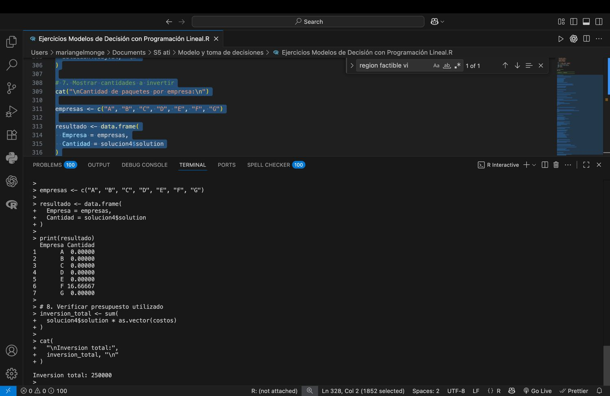
4.7. Interpretación de resultados
Mediante la aplicación del modelo de programación lineal en R, se determinó que la mejor decisión es invertir los $250.000 disponibles en la empresa F.
Esta empresa presenta la mayor rentabilidad en relación con su costo, por lo que resulta más conveniente que las demás alternativas.
La solución indica que deben adquirirse aproximadamente 16,67 paquetes de acciones de la empresa F, obteniendo una rentabilidad mensual máxima de $133.333,33.
Además, se comprobó que la inversión utiliza la totalidad del presupuesto disponible y cumple con las restricciones establecidas. Por lo tanto, esta distribución representa la solución óptima del problema.
Actividades desarrolladas
Resolví cuatro ejercicios de programación lineal: Reddy Mikks, Granjas Modelo, asignación de programas a procesadores e inversión en la bolsa. Para cada uno planteé las variables, la función objetivo y las restricciones, utilizando R para encontrar las soluciones óptimas.
Valoración de lo aprendido
Con estos ejercicios aprendí a representar problemas reales mediante modelos matemáticos y a buscar soluciones que permitan aprovechar mejor los recursos. Comprendí cómo plantear correctamente las restricciones y utilizar R para maximizar ganancias o minimizar costos y tiempos. Además, pude ver que la programación lineal se puede aplicar a situaciones muy diferentes, desde la producción hasta las inversiones.
Método Simplex
Ejercicio 1
Planteamiento del problema (diapositiva 15)
Función objetivo:
Sujeto a las restricciones:
No negatividad:
Tabla inicial del método Simplex
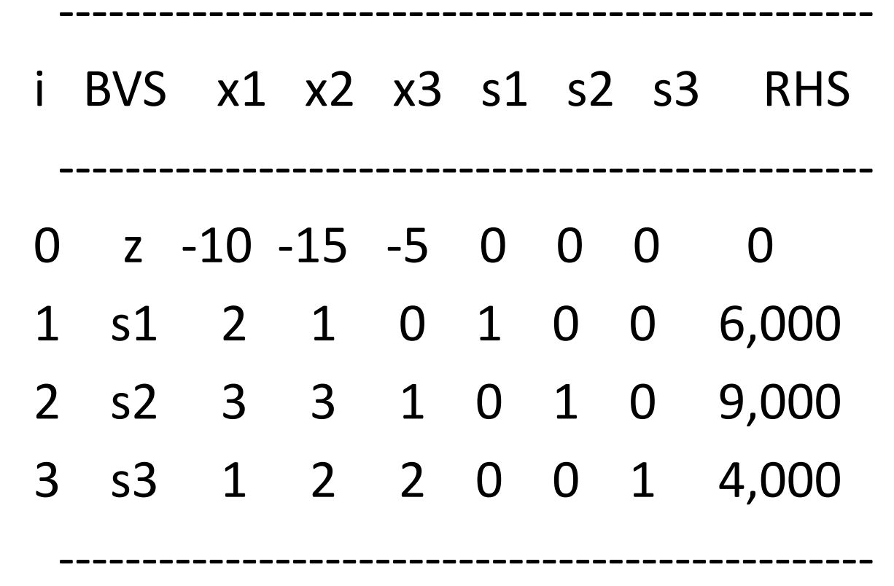
Solución obtenida en R
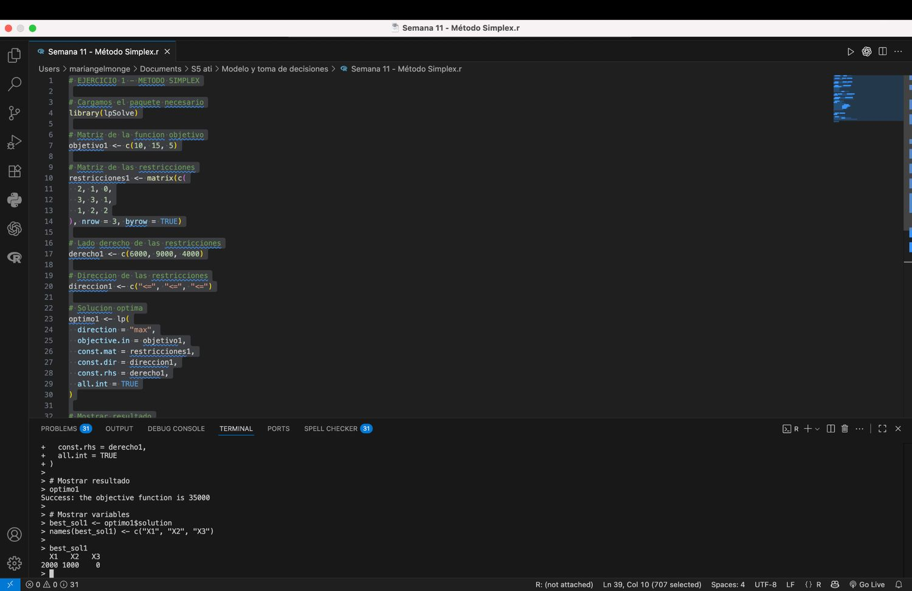
Al ejecutar el modelo utilizando la biblioteca lpSolve, se obtuvo la siguiente solución óptima:
Valor máximo de la función objetivo: Z = 35 000.
Interpretación
La solución óptima se alcanza cuando X1 = 2000, X2 = 1000 y X3 = 0, obteniendo un valor máximo de 35 000 y cumpliendo con las restricciones del modelo.
Ejercicio 2
Planteamiento del problema (diapositiva 17)
Función objetivo:
Sujeto a las restricciones:
No negatividad:
Forma tabular
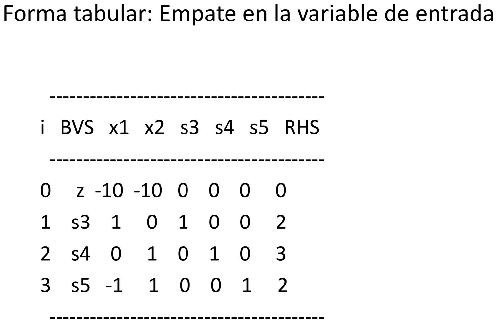
Solución obtenida en R
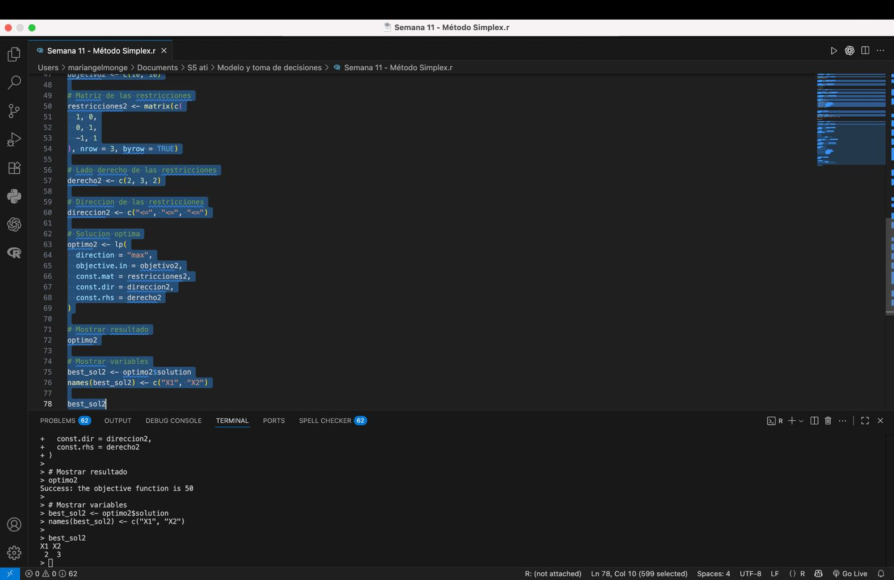
Al ejecutar el modelo utilizando la biblioteca lpSolve, se obtuvo la siguiente solución óptima:
Valor máximo de la función objetivo: Z = 50.
Interpretación
La solución óptima se alcanza cuando X1 = 2 y X2 = 3, obteniendo un valor máximo de 50 y cumpliendo con todas las restricciones del modelo.
Ejercicio 3
Planteamiento del problema (diapositiva 19)
Función objetivo:
Maximizar:
Sujeto a las restricciones:
No negatividad:
Forma tabular
----------------------------------------------
i BVS x1 x2 s1 s2 s3 RHS
----------------------------------------------
0 z -15 -10 0 0 0 0
1 s1 1 0 1 0 0 2
2 s2 0 1 0 1 0 2
3 s3 1 1 0 0 1 4
--------------------------------------------
Solución obtenida en R
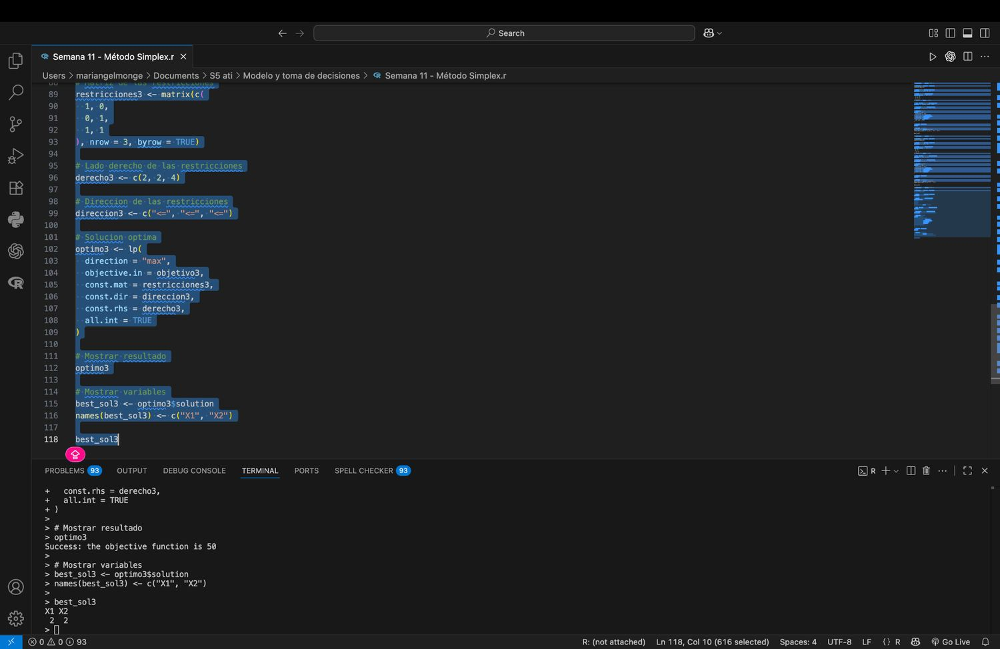
Al ejecutar el modelo utilizando la biblioteca lpSolve, se obtuvo la siguiente solución óptima:
- X1 = 2
- X2 = 2
Valor máximo de la función objetivo: Z = 50.
Interpretación
La solución óptima se alcanza cuando X1 = 2 y X2 = 2, obteniendo un valor máximo de 50 y cumpliendo con todas las restricciones del modelo.
Ejercicio 4
Función objetivo:
Maximizar:
Sujeto a las siguientes restricciones:
Forma tabular
| Restricción | X1 | X2 | Signo | Lado derecho |
|---|---|---|---|---|
| 1 | 1 | 0 | <= | 2 |
| 2 | 1 | -1 | <= | 0 |
Coeficientes de la función objetivo
| Variable | X1 | X2 |
|---|---|---|
| Maximizar Z | 15 | 10 |
Resultados obtenidos en R
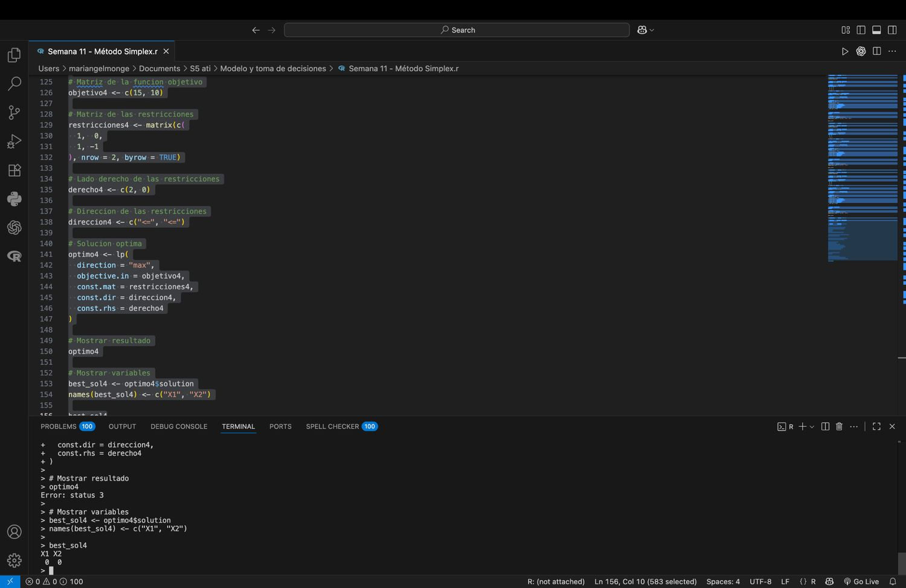
Al ejecutar el modelo mediante la biblioteca lpSolve, se obtuvo:
Estado del modelo: 3 (solución no acotada).
Valor máximo de Z: No existe un máximo finito.
Variables de decisión: No se obtiene una solución óptima finita.
En este caso aunque R muestra X1 = 0 y X2 = 0, estos valores no representan la solución óptima. El programa los muestra porque no encontró un máximo finito.
Interpretación de resultados
Al resolver el modelo en R, se obtuvo una solución no acotada, debido a que no existe una restricción que limite el valor máximo de X2. Por esta razón, la función objetivo puede aumentar indefinidamente y no es posible determinar un valor máximo para Z.
Ejercicio 5. Programas y procesadores
Planteamiento del problema
Se tienen cuatro programas que deben asignarse a cuatro procesadores. Cada programa tiene un tiempo de ejecución diferente según el procesador utilizado. El objetivo es determinar la asignación que permita minimizar el tiempo total de ejecución.
Datos del problema:
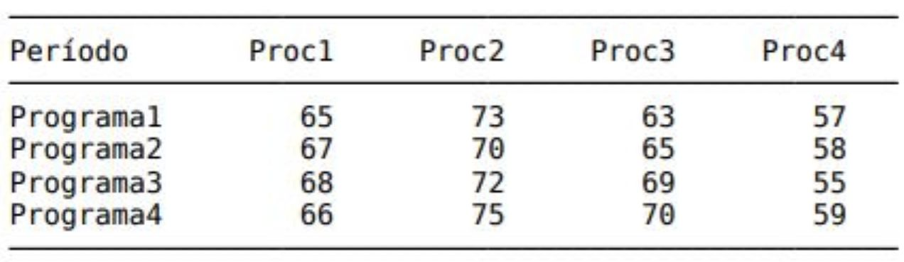
Forma tabular
Función objetivo: Minimizar el tiempo total de ejecución.
Variables de decisión:
Xij = 1 si el programa i se asigna al procesador j; 0 en caso contrario.
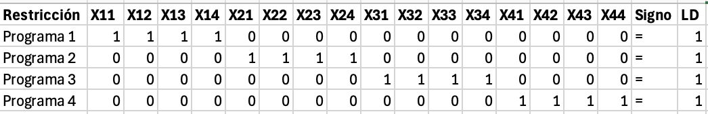
Además, cada procesador debe recibir exactamente un programa.
Condiciones: Xij ≥ 0. El modelo se resolverá con variables continuas, como solicita el profesor, para comprobar si la solución obtenida es entera.
Interpretación de resultados en R
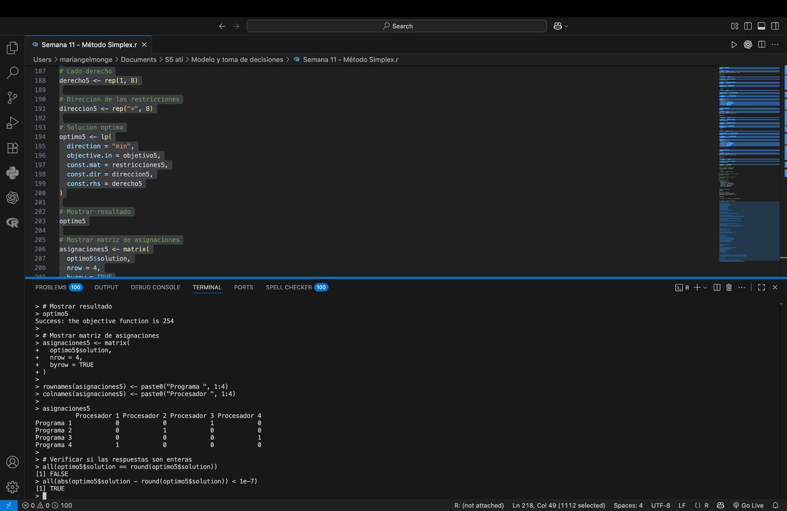
El modelo permitió determinar la asignación óptima de los cuatro programas a los procesadores, obteniendo un tiempo mínimo total de 254. Además, se comprobó que las asignaciones son enteras, aunque el modelo se resolvió utilizando variables continuas.
Ejercicio 6 - Inversión en la bolsa
Planteamiento del problema
Un grupo de estudiantes dispone de $250.000 para invertir en acciones de siete empresas. Cada empresa presenta un costo y una rentabilidad mensual diferente. El objetivo es determinar cómo distribuir el dinero disponible para maximizar la rentabilidad mensual.
Datos del problema:
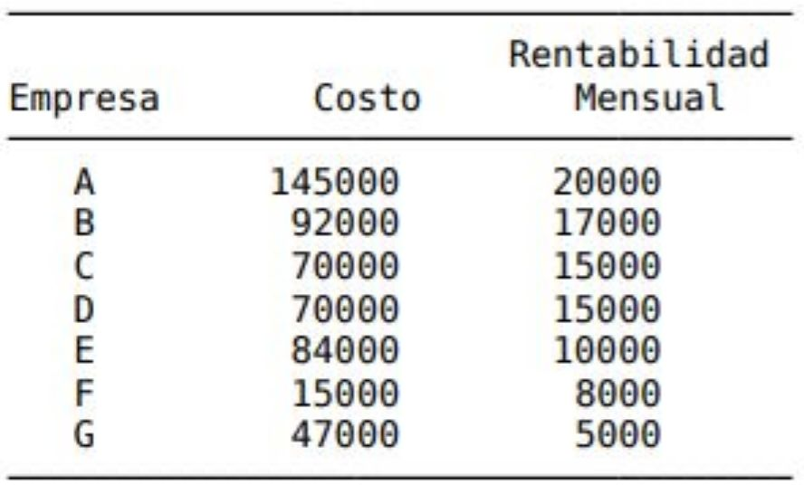
Variables de decisión
X1, X2, X3, X4, X5, X6 y X7 representan las cantidades de paquetes de acciones que se adquirirán de cada empresa.
Función objetivo
Maximizar:
Z = 20000 X1 + 17000 X2 + 15000 X3 + 15000 X4 + 10000 X5 + 8000 X6 + 5000 X7
Restricciones
Presupuesto disponible:
145000 X1 + 92000 X2 + 70000 X3 + 70000 X4 + 84000 X5 + 15000 X6 + 47000 X7 <= 250000
No negatividad:
Forma tabular
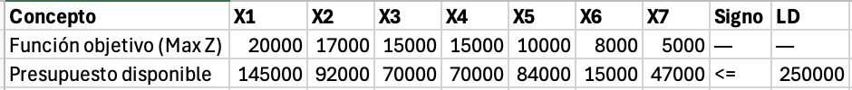
Condición: Todas las variables deben ser mayores o iguales a cero.
Resultados obtenidos
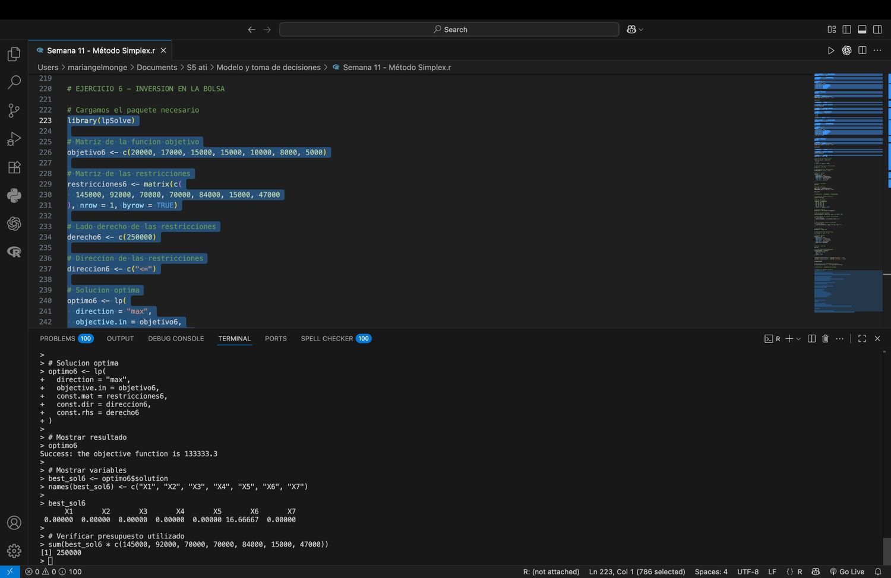
Solución óptima esperada:
| Empresa | Cantidad de paquetes |
|---|---|
| A | 0 |
| B | 0 |
| C | 0 |
| D | 0 |
| E | 0 |
| F | 16,6667 |
| G | 0 |
Verificación del presupuesto:
Rentabilidad mensual máxima:
El modelo permite comprar cantidades fraccionarias de paquetes de acciones. Por eso se obtiene una solución de 16,6667 para la empresa F. Si se exigieran paquetes completos, habría que utilizar programación entera y el resultado sería diferente.
Interpretación de resultados
El resultado obtenido indica que la mejor opción es invertir los $250.000 disponibles en la empresa F, adquiriendo aproximadamente 16,67 paquetes de acciones. Con esta inversión se obtiene una rentabilidad mensual máxima de $133.333,33. Por lo tanto, esta alternativa permite aprovechar todo el presupuesto y obtener la mayor rentabilidad posible según el modelo planteado.
Actividades desarrolladas
Resolví seis ejercicios relacionados con el método Simplex, planteando funciones objetivo, restricciones y tablas iniciales. También utilicé R y la biblioteca lpSolve para obtener e interpretar los resultados de los diferentes problemas.
Valoración de lo aprendido
Estos ejercicios me ayudaron a comprender mejor cómo funciona el método Simplex y cómo se utiliza para encontrar soluciones óptimas. Aprendí a organizar los problemas en forma tabular y a interpretar los resultados obtenidos en R. También comprendí que algunos problemas pueden tener soluciones no acotadas y que es importante revisar las restricciones antes de tomar una decisión.
Presentación: problemas de transporte
Actividades desarrolladas
Realicé una presentación sobre los problemas de transporte y asignación en programación lineal, explicando sus principales características, diferencias y aplicaciones.
Valoración de lo aprendido
Con esta presentación aprendí a diferenciar los problemas de transporte y asignación. Comprendí que los primeros buscan distribuir productos de la manera más eficiente, mientras que los segundos se enfocan en asignar tareas a diferentes recursos. También entendí cómo estos modelos pueden ayudar a las empresas a optimizar sus recursos y tomar mejores decisiones.
Ensayo: cadenas de Markov
La matemática detrás de las búsquedas en Google
El video La Extraña Matemática Que Predice (Casi) Todo, de Veritasium en español, explica cómo las matemáticas pueden utilizarse para comprender y predecir diferentes situaciones de la vida cotidiana. Uno de los temas principales son las cadenas de Markov, que permiten analizar la probabilidad de que ocurra un evento tomando en cuenta el estado actual de una situación. Lo que más me llamó la atención fue conocer cómo este concepto matemático llegó a utilizarse en algo tan común como las búsquedas en Google, ya que es una herramienta que utilizamos constantemente, pero pocas veces pensamos en todo lo que hay detrás de su funcionamiento.
Una de las aplicaciones más interesantes que se explican en el video es la relación entre las cadenas de Markov y el algoritmo PageRank, que fue desarrollado para ayudar a ordenar las páginas web según su importancia.
Antes de conocer esta historia, nunca me había preguntado cómo Google decide cuáles páginas mostrar primero cuando realizamos una búsqueda. Normalmente, uno escribe lo que necesita y espera que los primeros resultados sean los más útiles, sin pensar en que existe un proceso matemático que ayuda a determinar ese orden.
Lo interesante de PageRank es que utiliza los enlaces entre páginas web para calcular cuáles pueden considerarse más importantes. Para entenderlo, se puede imaginar a una persona que navega por Internet y pasa de una página a otra siguiendo enlaces de manera aleatoria. A partir de las probabilidades de esos movimientos, es posible estimar cuáles páginas tienen mayores posibilidades de ser visitadas. De esta manera, las cadenas de Markov permiten analizar el comportamiento de ese usuario imaginario y establecer una clasificación de las páginas.
Esta historia me impresionó porque demuestra que un concepto matemático que inicialmente puede parecer complicado o muy teórico puede terminar teniendo una aplicación que transforma la manera en que utilizamos la tecnología. Me parece curioso que algo que comenzó como un estudio de probabilidades pudiera convertirse en una herramienta tan importante para organizar la información en Internet. Además, me hizo pensar que muchas de las tecnologías que utilizamos diariamente funcionan gracias a modelos matemáticos que normalmente desconocemos.
En la actualidad, este tipo de modelos sigue siendo muy importante, especialmente porque vivimos en una época en la que tenemos acceso a enormes cantidades de información. Las cadenas de Markov no solamente pueden aplicarse al análisis de páginas web, sino también al estudio de diferentes procesos en los que existen probabilidades de pasar de una situación a otra. Por ejemplo, pueden utilizarse para analizar comportamientos, estudiar sistemas y ayudar a realizar predicciones a partir de ciertos datos.
También considero que este tema tiene una relación importante con el curso, porque demuestra cómo las matemáticas pueden ayudarnos a analizar situaciones en las que existe incertidumbre. Muchas veces no podemos saber con seguridad qué va a suceder, pero sí podemos utilizar probabilidades para comprender mejor los posibles resultados y tomar decisiones más fundamentadas. Esto es algo que puede aplicarse tanto en las empresas como en la tecnología y en muchas otras áreas.
En conclusión, lo que más me gustó de esta historia fue descubrir que detrás de una acción tan sencilla como buscar información en Google existe un modelo matemático que ayuda a organizar los resultados. El video me permitió comprender que las matemáticas no se limitan a resolver ejercicios, sino que también tienen aplicaciones muy importantes en nuestra vida diaria. Además, me dejó como aprendizaje que no siempre es necesario conocer con certeza lo que va a ocurrir para poder analizar una situación, ya que las probabilidades también nos permiten encontrar patrones y tomar mejores decisiones.
Actividades desarrolladas
Observé el video de Veritasium sobre las cadenas de Markov y elaboré un ensayo relacionado con su aplicación en el algoritmo PageRank de Google y su importancia en la toma de decisiones.
Valoración de lo aprendido
Esta actividad me permitió comprender cómo las cadenas de Markov utilizan probabilidades para analizar diferentes situaciones. Me pareció muy interesante descubrir cómo se aplican en algo tan cotidiano como las búsquedas de Google. Además, aprendí que los modelos matemáticos no solamente sirven para resolver ejercicios, sino que también tienen aplicaciones importantes en la tecnología y en la toma de decisiones.
Bibliografía
Veritasium en español. (2025, 23 de agosto). La extraña matemática que predice (casi) todo [Video]. YouTube. https://www.youtube.com/watch?v=6pO6Mm2qJaE